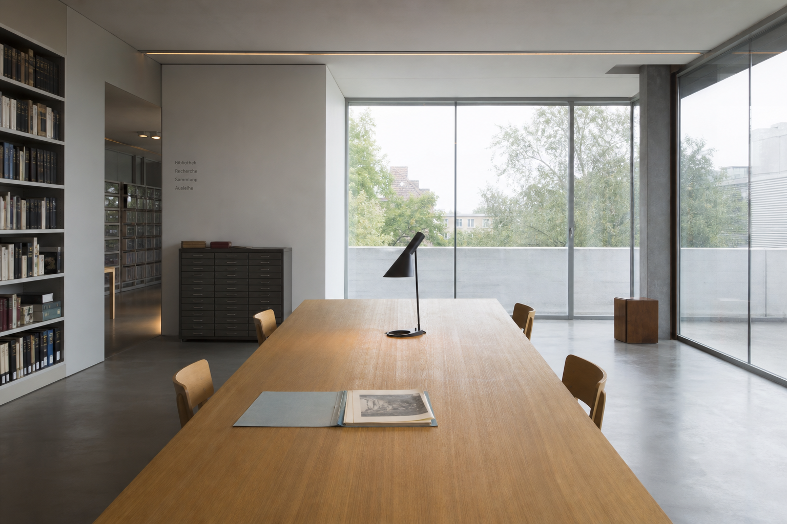

Leitung Archiv
Provenienz und Ankauf.
Wir bewahren typografische Praxis als Denkwerkzeug.
- Originale vor Reproduktionen lesen.
- Metadaten als Gestaltung ernst nehmen.
- Raster sichtbar, nicht mystisch machen.
- Provenienz lückenlos dokumentieren.
- Forschung öffentlich zugänglich halten.
- Fehler und Varianten nicht glätten.
- Schweizer Moderne kritisch befragen.

Team
Konservierung
Papier und Druck.
Forschung
Essays und Seminare.
Digitalisierung
Scan und Datenmodell.
Lesesaal
Benutzung und Beratung.
Vermittlung
Workshops und Schulen.
1957→2024
1957
Helvetica erscheintBeginn der Sammlung Schriftmuster.
1968
RasterlehreErste Unterrichtsblätter werden archiviert.
1985
Depot ZürichPlakatbestände werden zusammengeführt.
2024
Digitales InventarÖffnung für Forschung und Lehre.
Partnerinstitutionen
ZHdK
Museum Zürich
Basel Schule
Helvetica Archiv